Матеріали Дентсплай Сірона · журнал «ДентАрт» 2023 №3
Алгоритми відновлення пришийкових дефектів зубів
Algorithms for the restoration of cervical defects in teeth
Композитна реставрація зубів не обмежується лікуванням карієсу, вона також передбачає відновлення природної морфології, функції та естетики. У повсякденній стоматологічній практиці лікарі стикаються з різноманітними клінічними сценаріями, включаючи складне завдання, пов'язане з вибором техніки відновлення, підбором правильного кольору композитного матеріалу та досягненням найбільш природної інтеграції реставрації із зубом. Для створення ідеальної гармонії кольору часто потрібно використовувати два або три різні відтінки композитного матеріалу. З кожним новим матеріалом, що з'являється на стоматологічному ринку, відкривається все більше можливостей для творчих експериментів та досягнення визначних результатів. Це сприяє спрощенню та гнучкішому підходу до лікування, адаптації до унікальних клінічних ситуацій.
У статті запропоновано алгоритми, розроблені на основі двадцятирічного практичного досвіду, що використовуються при реставрації пришийкових дефектів зубів (Клас V за Блеком).
Для вибору методу відновлення таких дефектів стоматологові слід провести ретельну клінічну діагностику та проаналізувати фактори, що впливають на успіх фінальної реставрації, а саме: об'єм ушкодження, глибина ураження, наявність або відсутність дисколориту твердих тканин зуба.
Враховуючи в комплексі названі фактори, усі дефекти зубів за Класом V поділяють на чотири основні групи: початкове, середнє, середнє із зоною дисколориту та глибоке ураження. За основу диференціації було взято стан твердих тканин після препарування (наявність або відсутність дисколориту) і глибину ураження (схема 1).
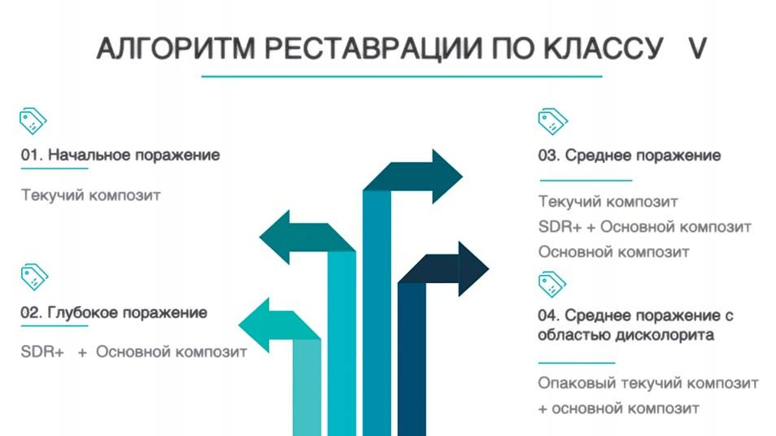
Схема 1. Алгоритм реставрації за Класом V. 01. Початкове ураження — текучий композит. 02. Глибоке ураження — SDR+ і основний композит. 03. Середнє ураження — текучий композит, SDR+ і основний композит або основний композит. 04. Середнє ураження із зоною дисколориту — опаковий текучий композит і основний композит.
Для кожної групи дефектів підібрано та запропоновано оптимальну комбінацію матеріалів, що відрізняються в'язкістю та відтінком, для досягнення надійних високоестетичних і довгострокових результатів. Комбінація передбачає застосування як окремо, так і в поєднанні низькомодульних композитів текучої консистенції, таких як Neo Spectra ST Flow (Dentsply Sirona), SDR Plus (Dentsply Sirona), та пакованих композитів Neo Spectra ST HV (висока в'язкість) або LV (низька в'язкість), Neo Spectra ST Effects (Dentsply Sirona).
Слід враховувати, що вибір матеріалу для реставрації зубів залежить від багатьох факторів. Серед них важливими є міцність композиту, легкість роботи з ним, ступінь зносостійкості, естетичні характеристики, модельованість і, звичайно ж, передбачуваність досягнення бажаного результату.
За умови правильної роботи з композитними матеріалами (коректна адгезивна підготовка, застосування стрес-знижувальних технологій, контроль при внесенні композиту) та дотримання адекватного рівня гігієнічного догляду за ротовою порожниною пацієнтом прямі реставрації можуть служити досить довго. А порушення при створенні реставрації можуть призвести до небажаного результату.
Відсутність необхідної інтеграції по межі «композитна реставрація — тверді тканини зуба» проявляється надалі у вигляді білих ліній, недостатньої крайової адаптації і пізніше призводить до появи забарвлювання в зоні переходу, порушення ретенції та виникнення вторинного карієсу. Стосовно пришийкових дефектів такі помилки особливо критичні.
Клінічний випадок 1. Відновлення початкового ураження
Основний матеріал для роботи — текучий композит.
Кілька років тому пацієнтові було проведено лікування зуба 34 за допомогою композитного матеріалу. До нашої клініки він звернувся зі скаргою на порушення зовнішнього вигляду реставрації, забарвлювання її харчовими барвниками, чутливість до холодових подразників. Після діагностики пришийковий дефект було визначено за описаною раніше у статті класифікацією як початкове ураження. У відповідності з науковими дослідженнями, у порожнинах Класу V, якщо межа порожнини не виходить за межі коронкової частини зуба, можна застосовувати низькомодульний композит текучої консистенції.
У цьому випадку використовувався новий композит Neo Spectra ST Flow, відтінок A2. Характерними властивостями цього матеріалу є те, що він у своєму складі містить сферичний наповнювач, такий же, як і у всіх пакованих композитах сімейства Neo Spectra ST. Завдяки унікальній технології наповнювача SphereTEC (попередньо сполімеризовані субмікронні частинки) кожен універсальний відтінок композиту Neo Spectra ST Flow надає лікареві-стоматологу можливість охопити одночасно кілька відтінків шкали VITA. Це зумовлено видатним ефектом хамелеона і здатністю матеріалу гармонійно інтегруватися з оточуючими тканинами. Також такий наповнювач визначає важливу властивість композиту Neo Spectra ST Flow — його тиксотропну поведінку.
Матеріал залишається на тому місці, куди був нанесений, доки на нього не буде здійснено вплив стоматологічним інструментом. Текучість композиту ініціюється за командою — впливом інструмента, що дозволяє наносити його контрольовано.
Перед накладанням рабердаму було підібрано відтінок композитного матеріалу Neo Spectra ST Flow. Для цього на попередньо очищену пастою Zirсate (Dentsply Sirona) поверхню зуба були приклеєні невеликі об'єми композиту двох суміжних відтінків А1 та А2. Надалі для роботи було обрано відтінок А2 (фото 2).
Під анестезією було зроблене первинне препарування кулястим бором із зеленим маркуванням без тиску, орієнтоване на дефект, з використанням турбінного наконечника з підсвічуванням при інтенсивному водному охолодженні. Далі краї емалі згладжені бором із жовтим маркуванням, видалені пошкоджені, ослаблені під час препарування ділянки емалі (фото 3).
Техніка тотального протравлювання виконувалася строго за таймером, протокол протравлювання стандартний для зубів із завершеною мінералізацією: емаль — 30 с, дентин 15 с (фото 4). Видалення кислотного кондиціонера — 36 % ортофосфорної кислоти — струменем води протягом 30-60 с (фото 5).
Як адгезив використовувався Prime&Bond universal (Dentsply Sirona), який працює при будь-якій техніці протравлювання і нечутливий до пересушування дентину. Також цей адгезив має унікальну властивість — контроль над надмірною вологістю у підготовленій для відновлення порожнині зуба (фото 6).
Матеріал Neo Spectra ST Flow, відтінок А2 вносився під контролем оптичного збільшення безпосередньо в порожнину (фото 7) з подальшим його розподілом по поверхні зуба та межах дефекту за допомогою тонкого моделювального інструмента — зонда (фото 8).
Після фінальної полімеризації композиту протягом 10 с провадилася фінішна обробка реставрації. Надлишок композиту на межі переходу «фотополімер — емаль зуба» коригувався гострим скальпелем № 12D (фото 9) з подальшим поліруванням формою «чашка» Enhanсe mini (Dentsply Sirona) на невеликих швидкостях обертання — 3000-4000 об/хв з водяним зрошуванням. Остаточно реставрація полірувалася пастами PrismaGloss Regular та Extra Fine (Dentsply Sirona) (фото 10). Фінальний результат — фото 11, 12.
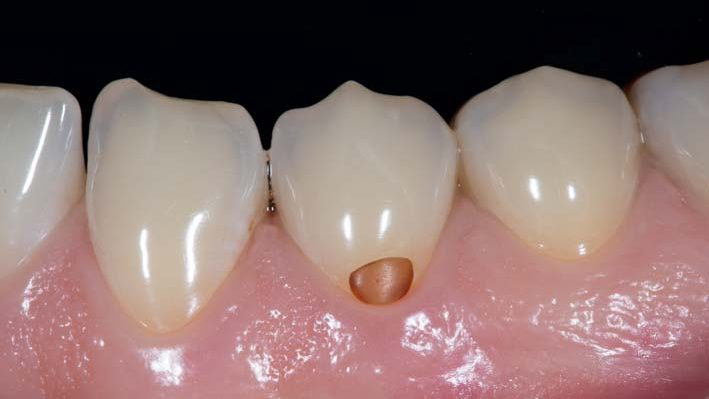
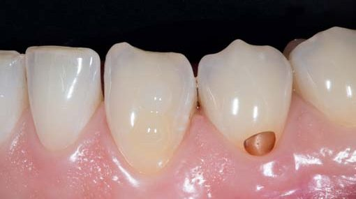
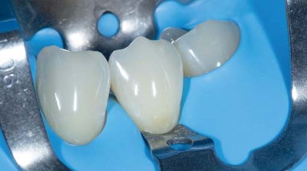
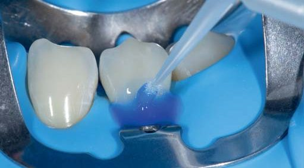
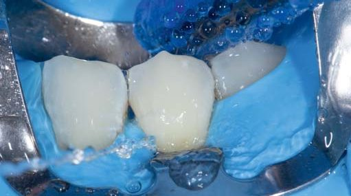
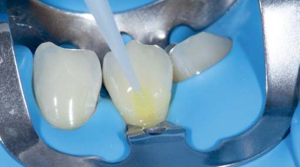
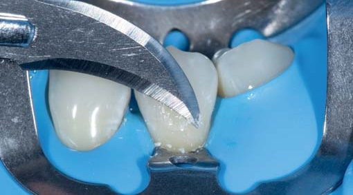
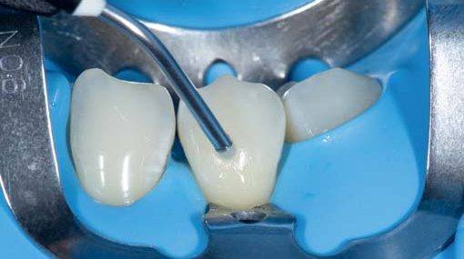
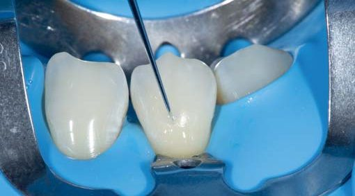
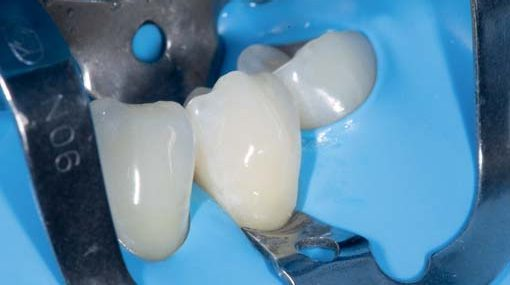
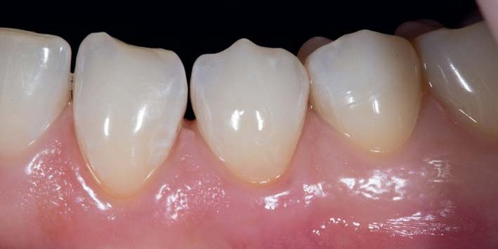
Клінічний випадок 2. Відновлення глибокого ураження
Основні матеріали для роботи — композит з текучими властивостями SDR Plus, пакований композит.
Пацієнтка звернулася в клініку зі скаргами на наявність каріозного ураження у зубі 42. Після клінічної діагностики, локальної професійної гігієни, підбору кольору композитного матеріалу, інфільтраційної анестезії було прийнято рішення про препарування порожнини після накладання гумової завіси. Для цього використовувалися безлатексна хустка Dental Dam (Sanctuary) та затискач № 90N (KSK).
Після видалення некротичних тканин, аналізу довжини та глибини дефекту він був класифікований як глибокий (фото 14). Для відновлення таких дефектів рекомендовано використовувати низькомодульний композитний матеріал з технологією SDR Plus, композити NeoSpectra ST Effects і NeoSpectra ST LV (низька в'язкість). Адгезивна підготовка робилася чітко за протоколом техніки тотального протравлювання (фото 15) із застосуванням Prime&Bond universal (фото 16).
Гібридний шар у порожнині був стабілізований і запечатаний композитом з текучими властивостями SDR Plus, відтінок A3 (фото 17). Шар текучого матеріалу, що самоадаптується, полімеризувався протягом 30 с, поскільки відтінок більш опаковий. Застосування SDR Plus (Dentsply Sirona) у цій клінічній ситуації запобігає просочуванню адгезивного шару, вирішує проблему подальшого відтермінованого склеювання з дентином, знижує полімеризаційний стрес, який може призвести до полімеризаційного відриву, і як наслідок — післяопераційної чутливості.
Як основні матеріали для реставрації було обрано відразу кілька нанокерамічних композитів сімейства NeoSpectra ST (Dentsply Sirona). Привабливими характеристиками цих композитів є простіший вибір відтінків, легкість адаптації в ротовій порожнині, чудова скульптурність композитів різних типів в'язкості, а також зменшення часу на фінішну обробку реставрації для досягнення блиску поверхні. Об'єм втраченого дентину імітувався відтінком D3 композитного матеріалу NeoSpectra ST Effects (фото 18). Фінальний об'єм емалі імітувався відтінком A3 композитного матеріалу NeoSpectra ST LV (низька в'язкість) (фото 19). Дуже важливо ретельно притерти композит до емалі, щоб нівелювати межу переходу із реставрації на природні тканини. Протокол фінішної обробки та полірування був стандартним. Фінальний результат — фото 20.
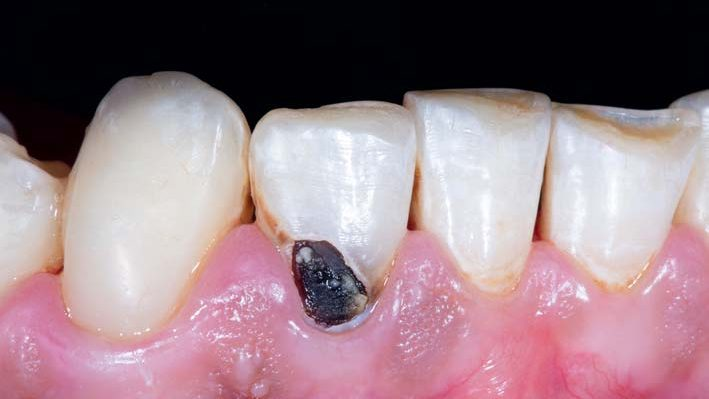
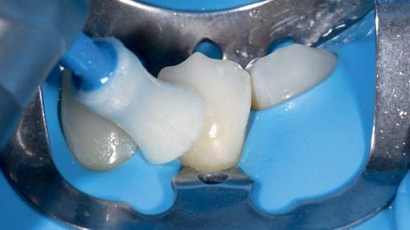
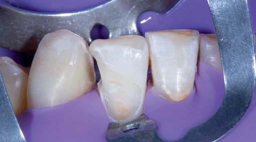
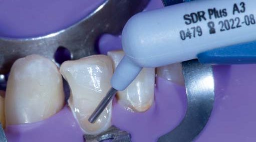
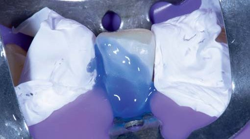
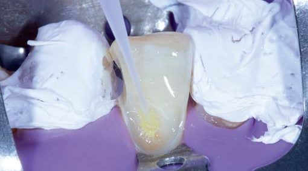
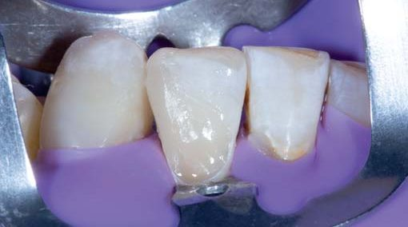
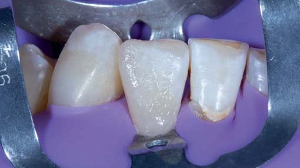
У ряді клінічних випадків трапляються ситуації, коли за помірного ураження твердих тканин при тривалих хронічних процесах спостерігається виражена пігментація дентину. Після екскавації зруйнованих тканин частина пігментованого дентину залишається на дні підготовленої для відновлення порожнини зуба. Пришийкові дефекти такого плану можна віднести до середнього ураження з ділянкою дисколориту. Для достатньо прийнятного естетичного результату рекомендовано обов'язково використовувати техніку «білого аркуша», коли зона пігментації блокується яскравим опаковим композитом з наступним закладанням тону кольору дентину і фінальним емалевим шаром.
Клінічний випадок 3. Відновлення середнього ураження із зоною дисколориту
Основні матеріали для роботи — опаковий текучий композит, пакований композит.
У цьому клінічному випадку (фото 21, 22) для блокування пігментованого дентину в зубі 45 використовувався текучий композит Neo Spectra ST Flow опакового відтінку D1. Він ідеально нівелює дисколорит натуральних тканин зуба, розташованих під реставрацією, навіть за мінімальної товщини шару (фото 23). Для відновлення дентину та емалі використовувалися відтінки пакованого композиту Neo Spectra ST Effects, відтінок D3 і Neo Spectra ST LV (низька в'язкість), відтінок A3 відповідно (фото 24, 25).
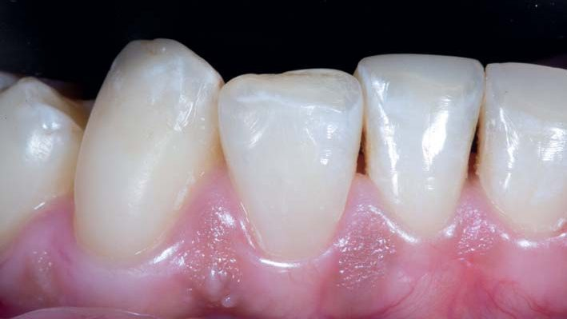
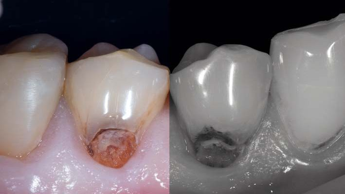
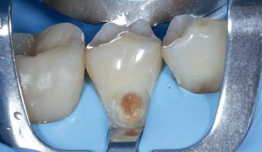
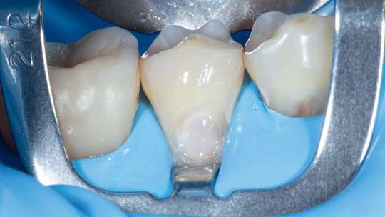
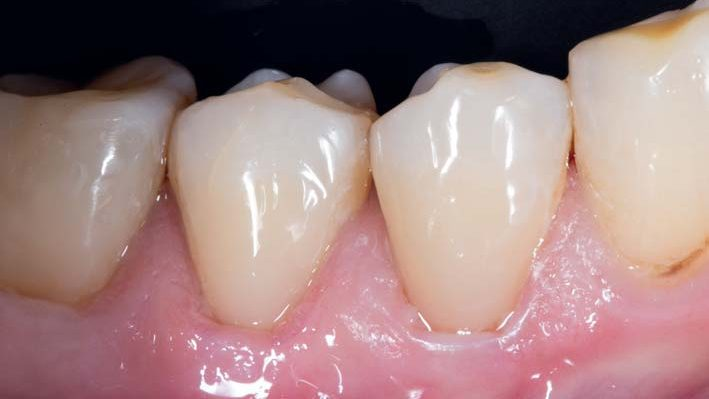
Клінічний випадок 4. Відновлення середнього ураження без вираженої ділянки дисколориту
Основні матеріали для роботи — опаковий текучий композит, пакований композит.
За відсутності вираженого забарвлювання дентину зуба 44 після ізоляції та адгезивної підготовки дентинний шар можна відновити тонким шаром текучого композиту опакового відтінку Neo Spectra ST Flow, відтінок D3. Хотілося б ще раз звернути увагу на виражену тиксотропну властивість цього композиту. Ця властивість забезпечує можливість точного і локального внесення композиту у конкретні ділянки порожнини зуба. Вона також дозволяє ефективно контролювати процеси вклеювання і товщину внесеного матеріалу. Поверх шару дентину емалевий шар відновлено універсальним композитом Neo Spectra ST LV (низька в'язкість), відтінок A3.
Попередня обробка реставрацій у пришийковій зоні включає обробку фінішними борами (пришийковим та полум'яподібним) жовтого маркування, видаляються надлишки композиту у цій зоні. Первинне шліфування системою Enhance під рабердамом — для зменшення ризику пошкодження ясенного краю. Фінішне полірування виконується полірувальними пастами PrismaGloss Regular та Extra Fine (Dentsply Sirona). Блиск поверхні досягається дуже швидко.
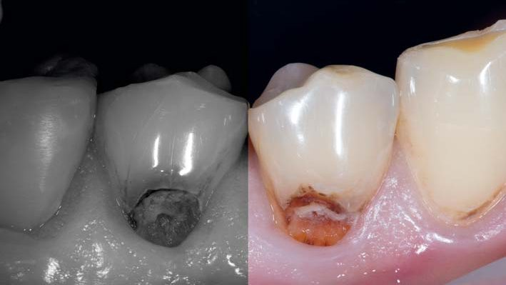
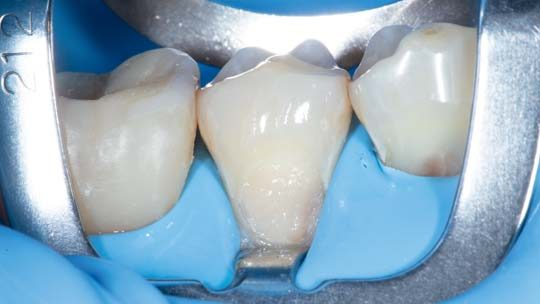
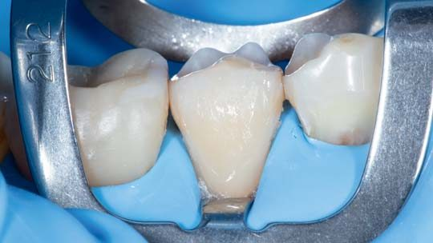
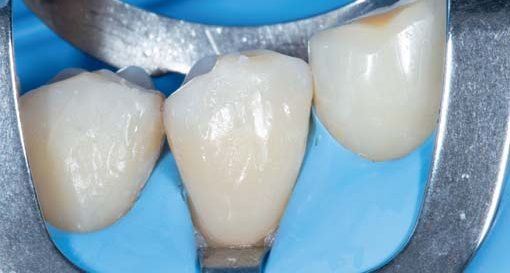
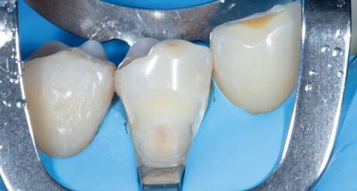
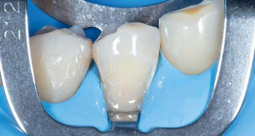
Висновки
На закінчення слід наголосити, що композитна реставрація є невід'ємною частиною сучасної стоматології, яка сприяє відновленню природної естетики та функції зубів. Алгоритми, запропоновані на основі багаторічного досвіду, підхід, описаний у статті, надають стоматологам інструменти для успішної реалізації складних клінічних сценаріїв під час відновлення пришийкових дефектів зубів.
Правильний вибір матеріалів і технік відновлення з урахуванням індивідуальних особливостей пацієнтів відіграє ключову роль у досягненні високоефективних та довгострокових результатів. Застосування комбінації композитних матеріалів сімейства Neo Spectra ST (Dentsply Sirona) спрощує процес реставрації і дозволяє досягти передбачуваного, естетичного та довговічного результату роботи.
Література
- Dentsply Sirona. Научный компендиум Neo Spectra ST, 2021.
- Дуглас Терри, Вилли Геллер. Эстетическая и реставрационная стоматология. Выбор материалов и методов. Азбука, 2013.
- Эстетическая стоматология. № 1-2 / 3-4, 2020.
- Krejci I., Lutz F. Marginal adaptation of Class V restorations using different restorative techniques. J Dent 1991 Feb;19(1):24-32.
- Yazici A. R., Baseren M., Dayangaз B. The effect of flowable resin composite on microleakage in class V cavities. Oper Dent. 2003 Jan–Feb; 28(1):42-6.
Література
- Dentsply Sirona. Науковий компендіум Neo Spectra ST, 2021.
- Терри Д., Геллер В. Эстетическая и реставрационная стоматология. Выбор материалов и методов. — Азбука, 2013.
- Эстетическая стоматология. — № 1–2 / 3–4, 2020.
- Krejci I., Lutz F. Marginal adaptation of Class V restorations using different restorative techniques. J Dent. 1991 Feb; 19(1): 24–32.
- Yazici A. R., Baseren M., Dayangac B. The effect of flowable resin composite on microleakage in class V cavities. Oper Dent. 2003 Jan-Feb; 28(1): 42–46.